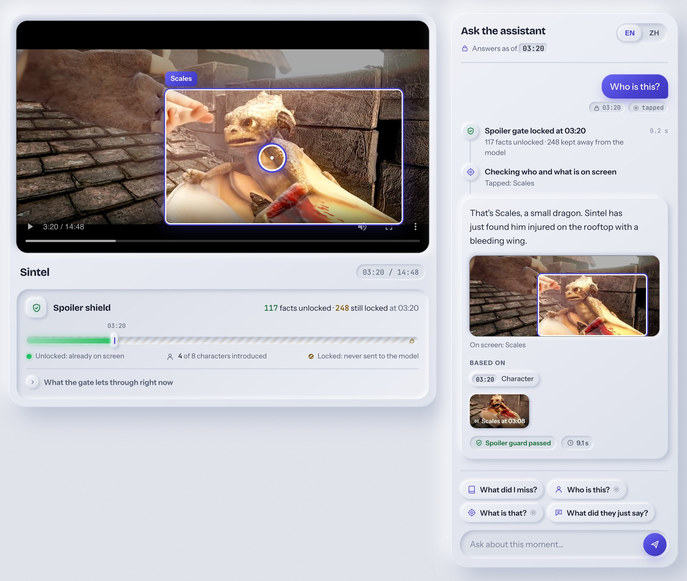
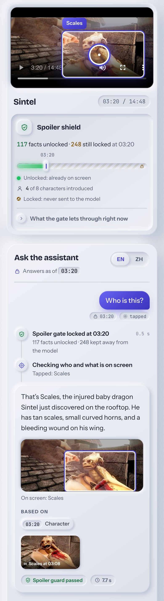
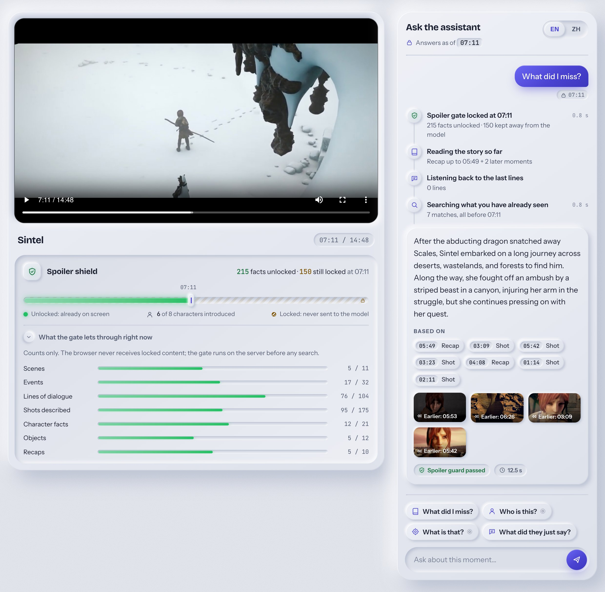

AI Builder Cup 2026 · Media, Content & Digital Experiences
A spoiler-free viewing companion, built on Gemini and Google Cloud.
Pause any film and ask. It answers only from what you have already seen: it never names a character before the film does, never hints at a twist and never says an actor’s name.
The problem
From reviews, wikis and its training data. It cannot tell what you have seen, so it answers with everything it knows.
Today viewers rewind, search the web and risk spoilers, or stay confused.
Why it is hard
Popular films are in the training data. Telling the model “don’t spoil” leaves the knowledge in place.
Retrieval over a whole film puts later scenes in the candidate list. One missed filter and they reach the prompt.
A spoiled answer reads fluently and confidently. Nothing in the output signals that something went wrong.
The experience


The experience

How it works
A · Offline ingest once per film · local or Cloud Run Jobs
B · Online Q&A every question · Cloud Run service
The spoiler gate
Ranks the whole film, then filters. If the filter silently stops applying, the result is a spoiler.
Brings in synopses, reviews and wikis: exactly where spoilers live.
The client would need the evidence, and a client can be modified. The gate must run behind the server’s trust boundary.
The agent
story_so_farLatest eligible recap plus the scenes and events after it. The first choice for “what did I miss?”search_momentsEmbeds the question with gemini-embedding-2 and ranks only inside the eligible set.recent_dialogueLines spoken before P, with who said each one when known.on_screenWho and what is in the paused frame; a tap is matched to their boxes, and labels are decided at P.look_closerGemini 3.8 Flash looks at the paused frame plus stills from the 30 s before it.The server writes P, title, language and tap into the ADK session with state_delta. Tools read ToolContext.state; no tool takes P as an argument.
Streamed to the browser with Server-Sent Events.
If the output guard finds a forbidden term, the draft is discarded and the question is answered again in a fresh session with a do-not-use hint. If that still fails, a fixed safe answer is returned.
Built on Google Cloud
Results
gate violations in checked retrieval results
vector retrieval hits in the top 3 (full-text only: 22 / 40)
Chinese questions with a correct top-3 retrieval hit (full-text: 0 / 14)
speaker attributions correct in spot checks
character identities correct in shot entities
shot captions fully correct in spot checks
to a full answer (local tests), with ≤ 3 tool calls by instruction
total Gemini cost to ingest all three films, re-runs included
Spot checks on Sintel unless noted. Retrieval: 20 questions × 2 pause positions, scored by top-3 time overlap. Films: Sintel, Tears of Steel, Elephants Dream (Blender Foundation, CC BY).
Community benefit
Accessibility
“Who said that?” is answered from speaker-attributed dialogue, without spoiling what comes next.
Language
Ask in Chinese about an English film. Cross-language retrieval finds the moment, and the answer comes back in your language.
Attention
A recap that stops exactly where you are, for families, interrupted evenings and long films.
A study companion for film classes and library collections that explains what students have watched without giving away the ending.
A second-screen companion that keeps viewers engaged instead of searching elsewhere. Creators can open their story to questions because reveal times are data they can review.
Feasibility and scalability
Honest limits: the demo serves automatically pre-checked rows; production would add the human review step for names and twists. Shot captions are about 85% fully correct, and the output guards are a safety net, not a guarantee.
Roadmap
Next
Push-to-talk or a wake word. P locks at the moment you speak, as the spec already defines.
Next
Ship the device pack with the title so simple questions work offline on the living-room screen.
Next
A review interface on top of the existing patch format, so a person can confirm names and reveals quickly.
Later
Gate across episodes and seasons: “previously on” recaps that stop at your episode.
Later
Recaps and answers beyond English and Chinese, with name canaries for each language.
Later
Studios, broadcasters and libraries ingest their own titles with their own review.
Hello Watch Assistant